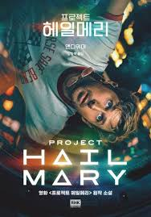
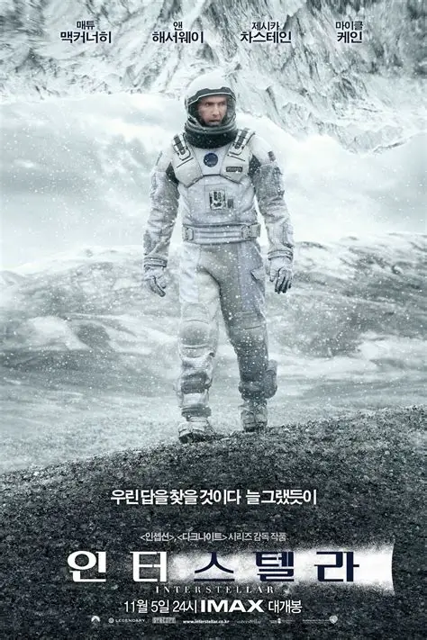
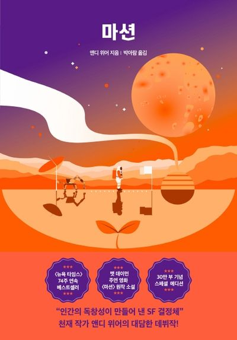
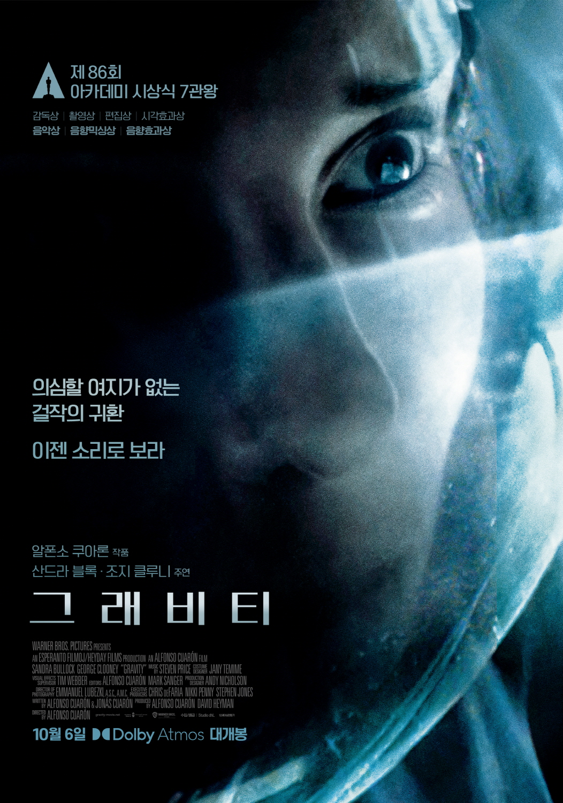
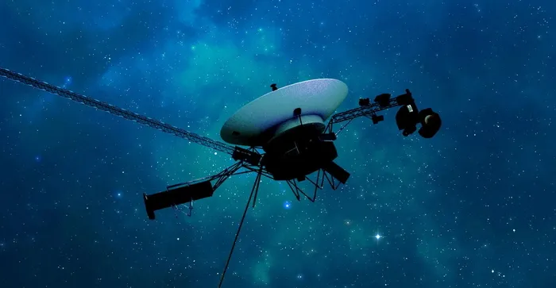
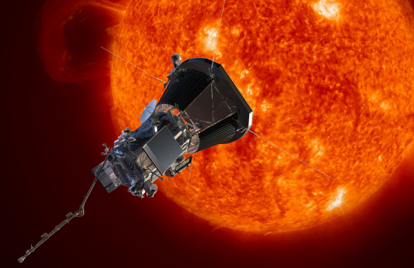
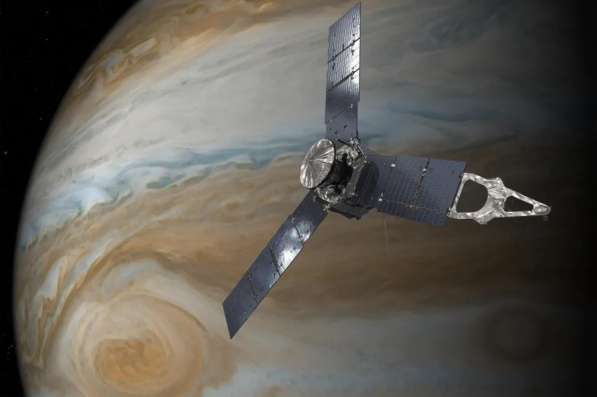

별빛기행 · 밤하늘 안내서
전 세계적인 사랑을 받은 SF 소설과 영화 명작들을 소개합니다.
저자 · 앤디 위어 (Andy Weir)
태양을 갉아먹는 우주 미생물 때문에 빙하기 위기에 처한 인류를 구하기 위해 홀로 외우주로 떠난 과학자 '라일랜드 그레이스'의 이야기입니다. 유쾌하고 철저한 과학적 고증, 그리고 우주에서 만난 외계 생명체 동료 '로키'와의 눈물겨운 우정과 연대가 짜릿한 감동을 선사합니다.

감독 · 크리스토퍼 놀란 (Christopher Nolan)
식량 부족과 기후 변화로 황폐해진 지구를 대체할 새로운 행성을 찾기 위해 웜홀을 통과하는 우주 비행사들의 탐험을 그린 영화입니다. 블랙홀과 상대성 이론, 차원을 넘나드는 압도적인 시각 효과와 가족을 향한 사랑의 가치를 웅장하게 그려낸 걸작입니다.

저자 · 앤디 위어 / 감독 · 리들리 스콧
화성 탐사 중 폭풍을 만나 홀로 남겨진 식물학자 '마크 와트니'의 화성 생존기입니다. 절망적인 상황 속에서도 특유의 긍정적인 성격과 기발한 과학 지식(화성에서 감자 키우기 등)을 총동원해 지구로 돌아가기 위해 투쟁하는 유쾌하고도 감동적인 서사입니다.

감독 · 알폰소 쿠아론 (Alfonso Cuarón)
우주 쓰레기와의 충돌 사고로 인해 우주 한가운데에 홀로 고립된 우주 비행사의 사투를 다룬 영화입니다. 광활하고 고요하면서도 숨 막히는 우주 공간을 완벽하게 재현해 냈으며, 삶에 대한 강렬한 의지와 재탄생을 미니멀하면서도 힘 있게 보여줍니다.

보이저 1호

1977년에 발사되어 목성과 토성을 거쳐 인류 역사상 최초로 태양계를 벗어난 탐사선입니다. 현재 지구에서 가장 멀리 떨어진 공간을 홀로 비행하며 성간 물질 정보를 지구로 송신하고 있습니다.
파커 솔라 프로브

인류 역사상 태양에 가장 가까이 접근한 태양 탐사선입니다. 엄청난 열기와 방사능을 견디며 태양의 대기층인 '코로나' 속을 직접 통과해 비행하며 태양풍의 비밀을 밝혀내기 위한 탐사를 수행 중입니다.
주노

목성의 기원과 구조를 밝히기 위해 파견된 탐사선입니다. 목성의 두꺼운 구름층을 뚫고 자기장과 중력장을 정밀 측정하고 있으며, 목성의 거대한 위성에 근접 비행하며 탐사를 이어가고 있습니다.